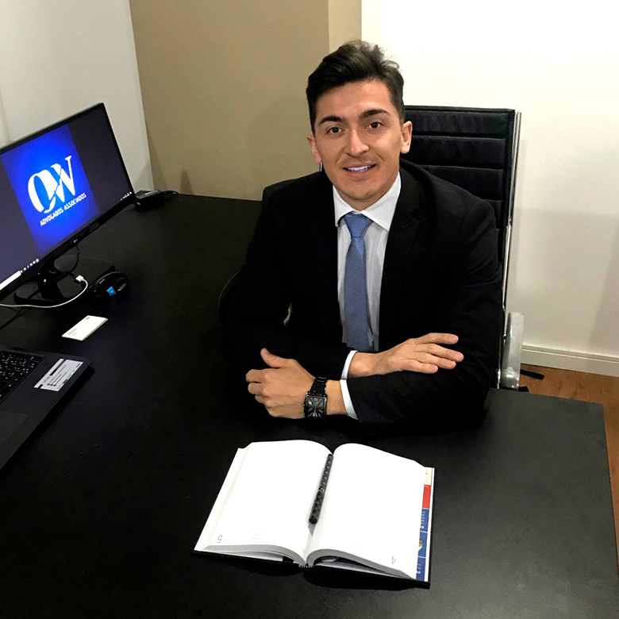
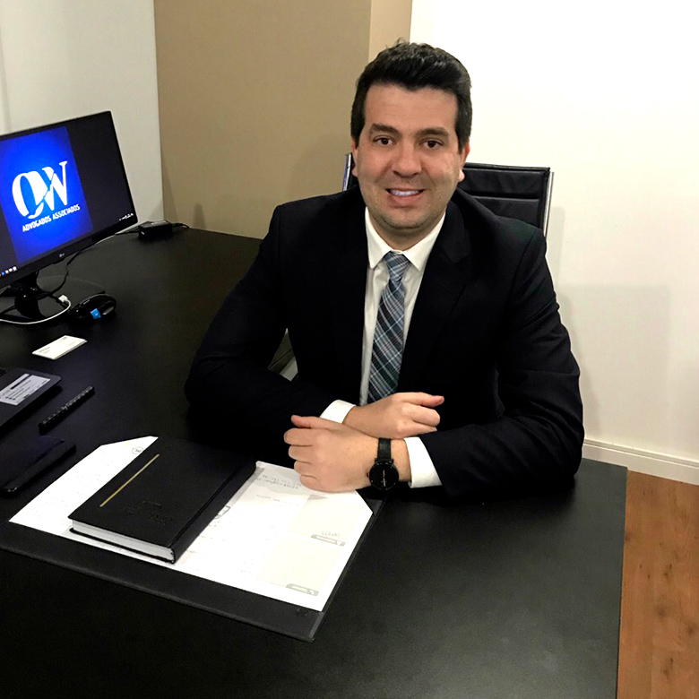

O Escritório Oliveira e Weinand Advogados Associados possui sede na cidade de Curitiba – Estado do Paraná. Foi fundado pelos Sócios Athos Rômulo Campos de Oliveira e João Claudio Franzo Weinand com o objetivo de prestar serviços jurídicos de excelência, priorizando o atendimento personalizado com o cliente. O Escritório atua nas áreas do Direito Imobiliário, Empresarial e Público.
Agende uma ConsultaO Escritório Oliveira e Weinand Advogados Associados possui sede na cidade de Curitiba – Estado do Paraná. Foi fundado pelos Sócios Athos Rômulo Campos de Oliveira e João Claudio Franzo Weinand com o objetivo de prestar serviços jurídicos de excelência, priorizando o atendimento personalizado com o cliente. O Escritório atua nas áreas do Direito Imobiliário, Empresarial e Público.
Com sede em Curitiba/PR e atuação em diversos estados brasileiros, a sociedade composta pelos Advogados Athos Rômulo Campos de Oliveira e João Claudio Franzo Weinand possui grande experiência profissional e vasto conhecimento jurídico. O Escritório Oliveira e Weinand Advogados Associados possui uma estrutura sólida e completa, contando com profissionais especializados em diversas áreas do Direito, para prestar um atendimento jurídico personalizado e focado sempre na satisfação dos interesses e realizações de seus clientes.
 Informações de contato, como endereço, telefone e e-mail.